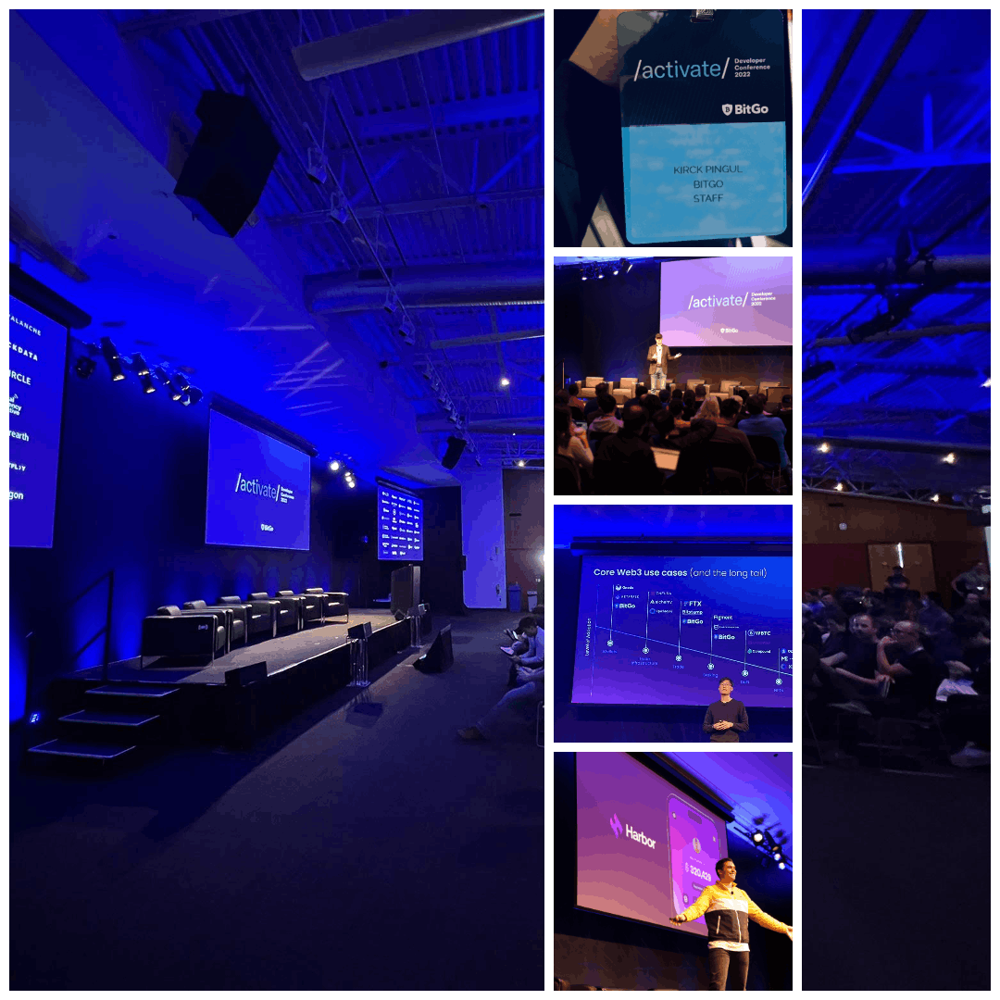

Held at the historic Computer History Museum in Silicon Valley, Activate is the world's premier multi-chain developer conference hosted by BitGo. Attending the event as part of the BitGo team was an absolute privilege and thrill. Unlike previous tech conferences where I was an attendee, this time I was at the heart of the action, helping to orchestrate an event dedicated to inspiring developers and advancing blockchain technology. From the moment I stepped into the museum in Mountain View, the buzz of innovation and excitement was undeniable.
One standout moment was the keynote by our CEO, Mike Belshe. His presentation delved into blockchain advancements and the evolving fintech landscape. A particularly exciting highlight was the public release of Harbor, the web3 wallet that multiple teams, including ours, worked tirelessly to ship and secure. Harbor is designed for EVM and Solana blockchains, focusing on DeFi and NFTs, and it was incredible to see it finally unveiled.
Being part of Activate felt like being at the forefornt of a revolutionary shift impacting the global financial and technological landscape. The hands-on workshops and inclusive atmosphere underscored BitGo's mission to empower developers and foster innovation. Engaging with a diverse group of professionals passionate about cryptography, distributed systems, and the future of money was truly inspiring. It was an honor to be a part of a team making such a significant impact in the blockchain and financial world. Huge thanks to everyone at BitGo who made this event possible. I'm excited to see what BitGo accomplishes in the future!
